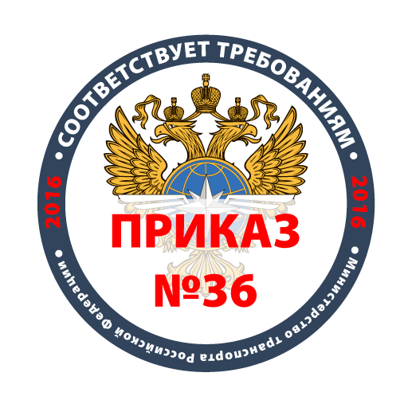
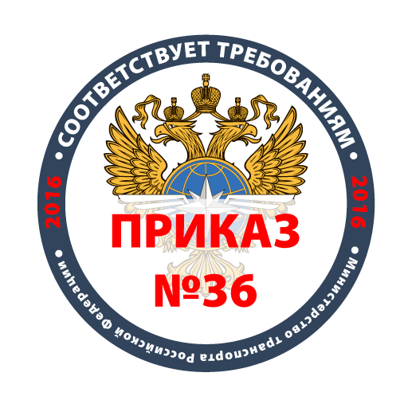

Тахограф Atol Drive 5 полностью соответствует требованиям российского законодательства и прошел необходимую сертификацию. Функции, реализованные в Drive 5, позволяют не только обеспечить требуемый законодательством уровень безопасности при эксплуатации транспортных средств, но и повысить эффективность перевозок, анализируя данные, сохраняющиеся в журналах устройства.
Для работы с данными тахографа Drive 5 не требуется персонал со специальной подготовкой. Наша система сервисных центров при необходимости обеспечит быстрый ремонт тахографов.
- Тахограф Atol Drive 5 имеет комплектацию с встроенным GSM-модемом, который предоставляет следующие возможности:
- удаленная выгрузка DDD-файлов с карт водителей;
- получение информации с двух цифровых датчиков уровня топлива;
- передача информации о местоположении транспортного средства;
- подключение тревожной кнопки и голосовой связи с водителем.
 


Atol Drive Smart это усовершенствованная версия тахографа Atol Drive 5, разработаная для повышения эффективности эксплуатации и обслуживания. Имеет улучшенные эксплуатационные характеристики, повышенную электрическую защиту, максимально низкое энергопотребление - не более 0,2 Вт в режиме энергосбережения. Совместим с любыми марками и моделями транспортных средств, как российских, так и иностранных.
Модуль расширения функциональных возможностей тахографа Drive Smart.
- Smart Box имеет следующие возможности:
- удаленная выгрузка DDD-файлов с карт водителей;
- получение информации с двух цифровых датчиков уровня топлива (ДУТ);
- передача информации о местоположении транспортного средства;
- подключение тревожной кнопки и голосовой связи с водителем.
Мобильное приложение «Мой тахограф ATOL» предназначено для водителей транспортных средств.
- С его помощью легко и удобно:
- переключать режимы работы;
- выполнить распечатку отчетов;
- просматривать текущие показатели времени вождения и времени до отдыха;
- изменять настройки тахографа и многое другое.
Отвечает всем требованиям российского законодательства
Тахографы внесены в реестр Росавтотрнаса, имеется лицензия на разрботку СКЗИ
Допущены для автомобилей, перевозящих опасные грузы
Тахографы защищены от взрыва и имеют сертификат, подтверждающий соответствие требованиям ДОПОГ
Автоматическое определение напряжения бортовой сети
Повышенная электрическая защита от кондуктивных помех. Низкое электропотребление.
Простая замена СКЗИ и батарейки
В отличие от большинства тахографов, модели АТОЛ не требуют полного вскрытия: СКЗИ и батарейка находятся в легкодоступных отсеках.
Поддерживают правило одной минуты
Появилось на современных цифровых тахографах и позволяет засчитать короткие остановки (например, в пробке) как отдых.
10 цветов диспелея
10 цветовых решений подсветки дисплея, которые устанавливает водитель.
Предрейсовый контроль
Возможность проведения предрейсового контроля в соответствии с законодательством. По окончании распечатывается отчет проведенного контроля.
Возможны разные варианты выгрузки данных
С помощью GSM-модема или при помощи мобильного приложения.
Вопросы по законодательству, связанные с тахографами
Отзывы о тахографе
Денис Гонца, коммерческий директор «ДВ Строй-Регион»
За последние два года мы оснастили большое количество транспортных средств категорий N2, N3, M2, N3 и ни разу не столкнулись с тем, чтобы тахографы АТОЛ Drive были не совместимы. Тахографы АТОЛ Drive Smart, нам как мастерской, прежде всего нравятся простотой монтажа и последующего сервисного обслуживания.
Иван Волчек, Генеральный директор ООО «Авто-Тахограф».
После первых же установок мы поняли, что за счёт внесенных конструктивных изменений, тахограф Drive Smart значительно проще и быстрее монтировать мастерам, чем любую другую модель, представленных на рынке. Нам и нашим клиентам он очень нравится: его надежность и функциональность.
Игорь Помогаев, Генеральный директор "ОАО Региональный навигационно-информационный центр по Кемеровской области"
Действительно лучший!!!!
Закажите тахограф у официального представителя в Уфе
На этой недели в БТС цены снижены на 1%